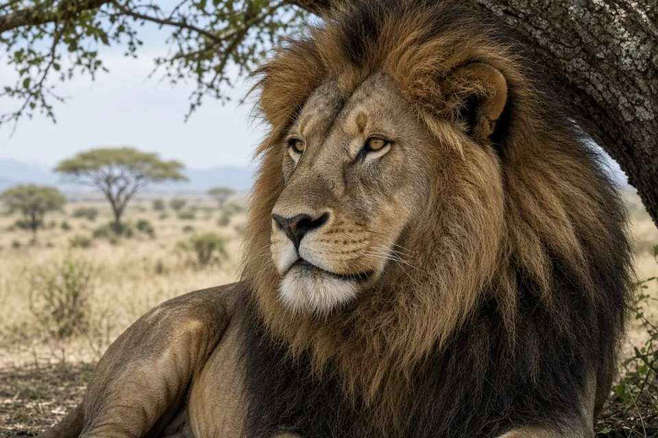

Home › Blog › How far can a lion roar be heard?
How far can a lion roar be heard? About 8 km on open savanna
Under open savanna conditions, a lion's roar can be heard by people about 8 km (5 miles) away. That figure appears in classic big cat references (Sunquist and Sunquist 2002) and in recent summaries of mammal call distance. The roar is also very loud at close range, often cited around 114 decibels, and lions use it to advertise territory, reunite pride members and intimidate rivals.
The short answer
About 8 km, or 5 miles, is the widely cited maximum hearing distance for a lion roar across open African savanna. IFAW states the same 8 km figure and puts peak loudness near 114 dB. Distance still depends on wind, vegetation, ground, competing noise and whether the listener is a person or another lion.
Where the 8 km figure comes from
Field workers and acoustic studies repeatedly cite Sunquist and Sunquist (2002) for a human hearing distance of at least 8 km. A 2011 acoustic analysis of lion roars (from Antelope Park, Zimbabwe) used that figure when describing how far enclosure lions could be heard. A later review of mammal call distances in the Journal of Mammalian Evolution, summarised in The Conversation, lists lion sounds travelling about 8 km on a good day in the savanna, with elephant rumbles travelling even farther.
So 8 km is a best case open country figure, not a guarantee in dense bush or near towns.
Why a roar carries so far
Lions, tigers, leopards and jaguars can roar; snow leopards and cheetahs cannot. Research by Klemuk and colleagues (2011) showed that lion and tiger vocal folds are shaped into flat pads with fatty tissue that vibrate easily at low frequencies. That helps produce a deep, rough roar without extreme lung effort. Low frequency sound also travels farther over open ground than high pitched calls, which is useful for a social cat whose pride members and rivals may be kilometres apart. See which big cats can roar?

What lions use the roar for
- Territory. A roar tells neighbouring lions that a pride or coalition holds this ground.
- Contact. Pride members that have spread out while hunting can relocate each other at night.
- Intimidation. Males especially roar to deter rivals before a fight.
Roaring is most common around dusk, night and dawn, when sound carries well and lions are active. Our lion facts and behavior pages put this in the wider social context of prides.
How loud is a lion roar?
Popular science and conservation sources often cite about 114 dB for a close range roar, louder than many power tools. Exact meter readings vary with distance from the animal and the recording gear. What matters for ecology is less the peak decibel number than the combination of loudness and low frequency that lets the signal cross kilometres of savanna.
Key takeaways
- About 8 km (5 miles) is the standard open savanna hearing distance cited for a lion roar.
- Low frequency vocal fold design helps the roar stay loud over long range.
- Lions roar to mark territory, find pride mates and warn rivals.
- Real world distance shrinks with wind, trees, hills and human noise.
Frequently asked questions
How far can a lion roar be heard?
About 8 km (5 miles) across open savanna under good conditions, based on classic references and later mammal call distance reviews.
How loud is a lion's roar?
Close range figures are often given around 114 dB. Exact readings vary with distance and equipment.
Why do lions roar?
To advertise territory, keep contact with pride members and intimidate rivals, especially at night.
Can other big cats roar as far?
Lions are usually described as the loudest. Tigers, leopards and jaguars also roar, but the 8 km figure is specifically tied to lions in open savanna.
Do female lions roar?
Yes. Both sexes roar, though male roaring is often more conspicuous in territorial contests.
Cite this page
APA: BigCatWise. (2026, November 5). How far can a lion roar be heard?. https://bigcatwise.com/blog/how-far-can-a-lion-roar-be-heard.html
MLA: "How far can a lion roar be heard?." BigCatWise, 5 Nov. 2026, bigcatwise.com/blog/how-far-can-a-lion-roar-be-heard.html.
Chicago: BigCatWise. "How far can a lion roar be heard?." Last modified November 5, 2026. https://bigcatwise.com/blog/how-far-can-a-lion-roar-be-heard.html.
Please check the date you accessed the page and adjust to your teacher's or journal's style guide.
Sources
- IFAW: 10 fascinating lion facts
- The Conversation: Animals can talk over huge distances (Journal of Mammalian Evolution summary)
- Klemuk et al. (2011) Adapted to roar: functional morphology of tiger and lion vocal folds, PLOS ONE
- IUCN SSC Cat Specialist Group: Lion
- Smithsonian's National Zoo and Conservation Biology Institute: Lion
Figures are rounded summaries of the sources above. Wild populations are hard to count, so estimates change as new surveys are published.